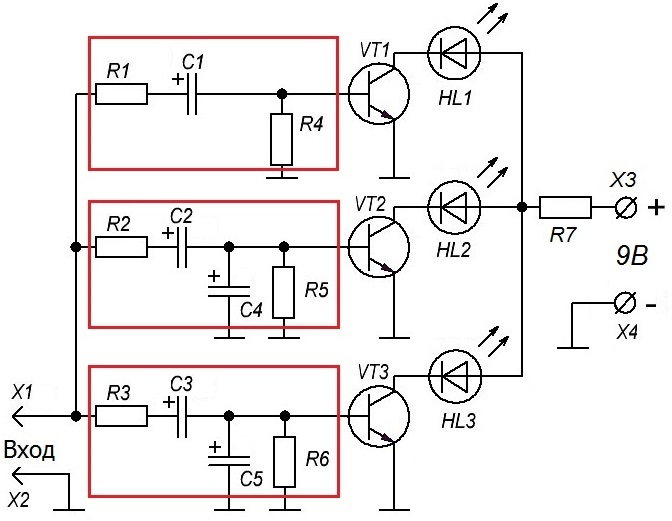
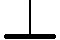
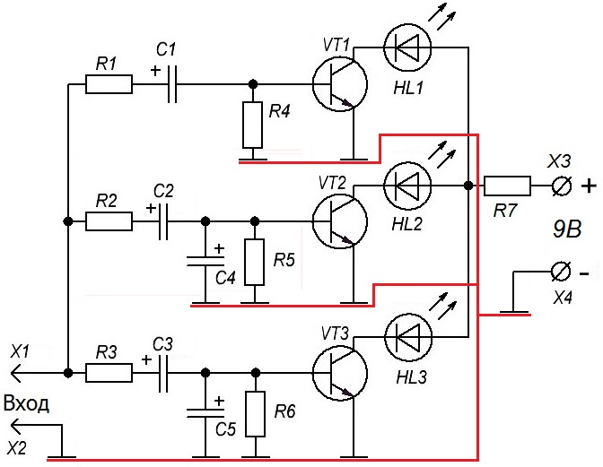

Трехканальная цветомузыкальная установка на светодиодах
Схема состоит из трех независимых частей (рис. 1):
- верхняя часть – канал высоких частот,
- средняя часть – канал средних частот
- нижняя часть – канал низких частот.
В каждом канале имеется RC-цепочка, играющая роль фильтра. На рис. 1 фильтры выделены красной рамкой. Сигнал, который смог пройти через фильтр, попадает на базу биполярного транзистора. Если уровень сигнала на базе превысит 0,6 В, транзистор открывается. Нагрузкой транзистора служит светодиод соответствующего цвета. Через коллектор-эмиттер открытого транзистора течет ток и светодиод светится.

Таблица 1
| Позиционное обозначение |
Наименование | Номинал | Кол-во | Примечание |
|---|---|---|---|---|
| С1 | Конденсатор электролитический | 100 мкФ-16В | 1 | |
| C2 | Конденсатор электролитический | 22 мкФ-16В | 1 | |
| C3, C4 | Конденсатор электролитический | 4,7 мкФ-16В | 2 | |
| С5 | Конденсатор электролитический | 1 мкФ-16В | 1 | |
| HL1 | Светодиод | АЛ307 | 1 | красный |
| HL2 | Светодиод | АЛ307 | 1 | зеленый |
| HL3 | Светодиод | АЛ307 | 1 | синий |
| R1 - R6 | Резистор постоянный | 100 Ом-0,25 Вт | 6 | |
| R7 | Резистор постоянный | 150 Ом-0,25 Вт | 1 | |
| VT1 - VT3 | Транзистор биполярный, n-p-n | КТ805 | 3 | КТ829 |
Питается схема от источника с выходным напряжением 9 В. На вход подается сигнал с наушников или с колонок. Если чувствительности недостаточно, то нужно собрать усилительный каскад. А если чувствительность будет высока, то на вход можно поставить переменный резистор и им регулировать входной уровень. Такая схема приведена здесь.
Транзисторы можно взять КТ805, КТ829. Для этих транзисторов вместо одного светодиода можно подключить несколько светодиодов. Если собирать схему на двух-трех светодиодах, то можно обойтись маломощным транзистором, типа КТ315.
Выводы, обозначенные значком

(корпус) соединяются одним проводом ("общий" провод) к минусу питания (рис. 2).
Собрать цветомузыку можно навесным монтажом или на монтажной плате. Правильно собранная схема в настройке не нуждается.
Недостаток схемы: приходится подбирать громкость музыки, чтобы была хорошая чувствительность зажигания светодиодов.
Источники:
sdelaysam-svoimirukami.ru - Простая цветомузыка на светодиодах